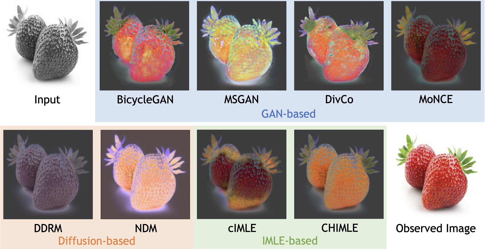
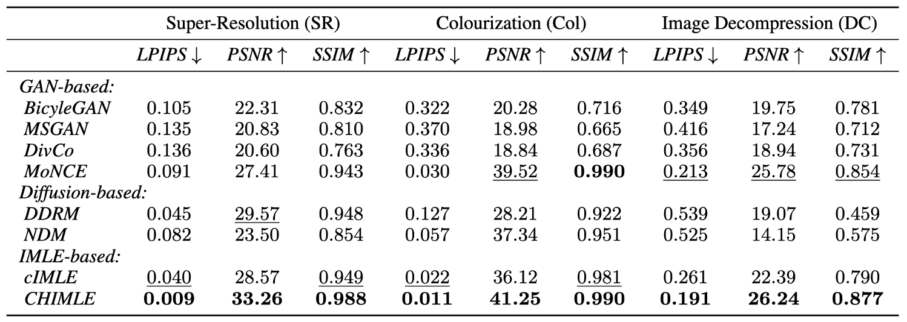

How Good Are Deep GenerativeModels for
Solving Inverse Problems?
Shichong Peng
APEX Lab
Simon Fraser University
Alireza Moazeni
APEX Lab
Simon Fraser University
Ke Li
APEX Lab
Simon Fraser University
Contents
Abstract
Deep generative models, such as diffusion models, GANs, and IMLE, have shown impressive capability in tackling inverse problems. However, the validity of model-generated solutions w.r.t. the forward problem and the reliability of associated uncertainty estimates remain understudied. This study evaluates recent diffusion-based, GAN-based, and IMLE-based methods on three inverse problems, i.e., 16x super-resolution, colourization, and image decompression. We assess the validity of these models' outputs as solutions to the inverse problems and conduct a thorough analysis of the reliability of the models' estimates of uncertainty over the solution. Overall, we find that the IMLE-based CHIMLE method outperforms other methods in terms of producing valid solutions and reliable uncertainty estimates.
Uncertainty Quantification
We measure the model uncertainty using a sampling-based conformal prediction method from Horwitz et al.. The constructed confidence intervals are shown below:
16x Super-Resolution

Image Colourization
Image Decompression

Output Validity
We evaluate the output validity of each method by comparing the original input to the solution to the forward problem applied to the generated image.
Citation
@inproceedings{
peng2023how,
title={How Good Are Deep Generative Models for Solving Inverse Problems?},
author={Shichong Peng and Alireza Moazeni and Ke Li},
booktitle={NeurIPS 2023 Workshop on Deep Learning and Inverse Problems},
year={2023}
}